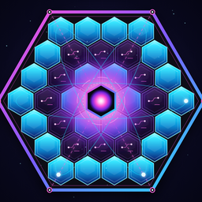

An event is one logged interaction with a decoy – a TCP connection, login attempt, command or HTTP request (passive fingerprinting and UDP excluded). Most are automated scans and password guessing, not successful attacks. Source IPs are summed per sensor. Methodology
Bait .env files on our web trap carry fake AWS keys. These hosts stole a key and tried to use it (mostly to send spam via SES). All reported to AbuseIPDB.
Tarpits waste bots' time, decoys collect what attackers try, and every attacker is reported automatically to AbuseIPDB, abuse.ch (URLhaus, MalwareBazaar, ThreatFox), SANS ISC/DShield, AlienVault OTX, CrowdSec, GreyNoise and Netcraft. Novelty = share of our attackers not (yet) on major public blocklists (ipsum, FireHOL, blocklist.de). Passive only – no hack-back. Contact: kotivahdit@proton.me
Methodology · Removal requests · Corrections log · Privacy · security.txt